Beer Gratitude
A story about the kindness and generosity of our amazing homebrewing community.
Beer and the culture surrounding it are an important part of my life. That much is obvious if you simply take a look at how much of my time and attention gets dedicated to homebrewing and exploring the world of beer. But this year in particular, some things took me by surprise. I’d like to take a minute now to reflect on how incredible and supportive the beer community - the homebrewing community in particular - has been to me.
A bit of background, first. My homebrewing journey started over a decade ago. In 2015 I returned to the United States just before Christmas after spending the year working abroad and I needed a last-minute gift for my dad. Enter Northern Brewer’s 1 gallon “Craft Beer Making Kit” which we happily brewed together over the holiday. As best I can recall, it was a pale ale recipe and it came out decent for a couple of guys who didn’t have much of a clue what we were doing. But what I do vividly recall is my mother opening up all of the windows in the middle of a Michigan winter to air out the smell we created and declaring that this would be the first and last brew day at their house. And just like that I inherited my first pieces of homebrewing gear. I’ll let you be the judge of whether I’m a master strategist or just a bad gift giver, but regardless of motive I was off and running with my new obsession!
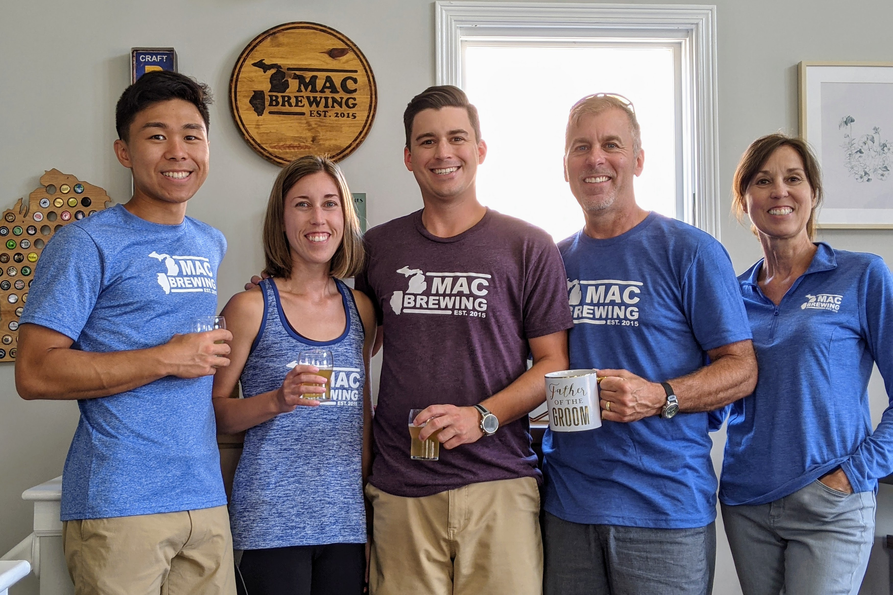
My parents, sister, and brother-in-law get ready for my wedding.
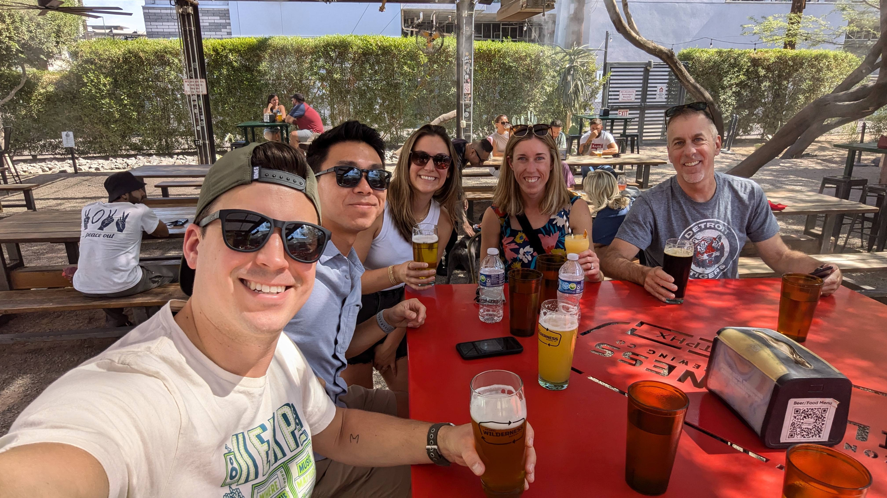
Sampling beers in Phoenix with my brother-in-law, wife, sister, and dad.
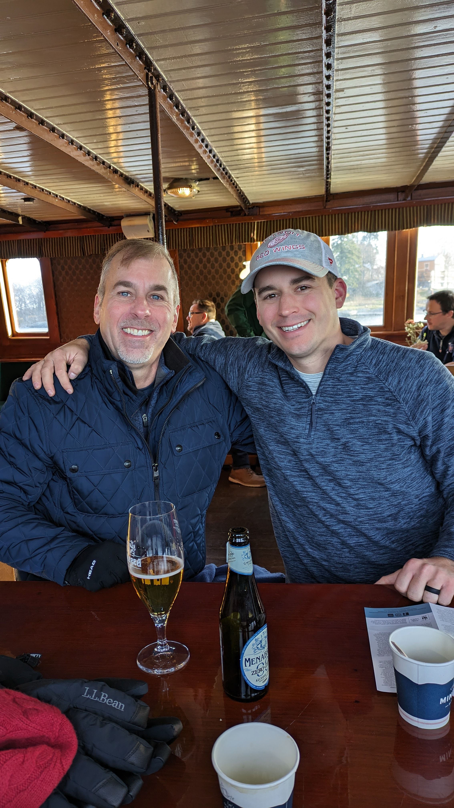
Following the Red Wings in Sweden and sampling NA beers.
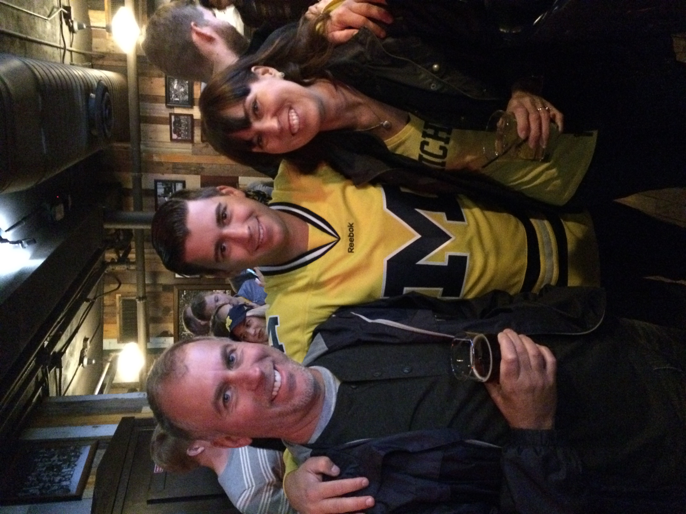
Rooting on our Wolverines over a cold beer.
My homebrewing community remained pretty small for years. In the early days I’d brew with roommates and even have friendly competitions at Michigan football tailgates (shoutout to Glover, Paul, and the Little Brown Growler trophy). Later, I’d have occasional buddies over for a brew day here and there, but mostly did things on my own and shared beer with friends, family, and colleagues at work. I never thought much about seeking out or joining a homebrew club. During the COVID pandemic, and like many I was seeking out new forms of entertainment and connection. There were plenty of socially distanced beer shares and tastings with buddies during this time, but I also found the Brülosophy podcast on my own time and really started to enjoy diving into the content. Fans of the podcast had even created their own online homebrew club called The Brü Club (TBC, for short), which started as a simple Facebook group to ask questions or share pictures of a cool setup, but ultimately morphed into the robust multi-channel community spread across the world with a constant buzz of activity and conversation. I had officially found my people!
Sure, they were really just my “internet friends” at the start, but this group became a really meaningful community. I’ve even met up with half a dozen or so other members at breweries in the real physical world to grab a pint and catch up. Fast forward to the start of 2026 and I felt comfortable enough with the group to share some updates about major events happening in my life. First, I shared that the news that my wife and I were expecting our first child. I chuckled at one reply amongst the congratulatory messages that said they thought I was on the “dual income no kids” train forever. It really shows how well many in the group have gotten to know me over the years. About a week after letting the group know the news, a care package arrived at my house containing diapers, a hilarious parenting book, and of course, beer. It was sent by Haven who is one of the leaders of TBC and just an all around awesome guy. What a nice gesture and pleasant surprise. Maybe that early sign of generosity foreshadowed what was to come in the following weeks.
Unfortunately, I had some bad news to share as well. My dad had been battling cancer for nearly 3 years, and as he transitioned to home hospice care it was clear the journey was coming to an end. The reason I even mentioned this to my TBC friends was because of a beer connection - I shared that I had organized a final beer toast together as a family with my homebrew. My dad and I had always shared a love of beer - lagers in particular - and he was a consistent taste tester and honest critic of my Mac Brews over the years. After his diagnosis, we also explored the world of non-alcoholic beers together which was an unexpected but fun way to continue connecting over beer. In the end, I thought my homebrewed Czech pilsner would make for a fitting final toast. I’ll never forget that final beer we shared together, partly because it was just a really “normal” feeling family moment during an extremely difficult time in our lives. True to form, my dad gave his honest review of the beer, but this time there was no critique as he declared the beer delicious then paused for a few moments. “It’s about 852 times better than our first attempt”, referencing that first 1-gallon batch we made together. Classic.
My dad’s cancer battle came to an end just a couple of weeks later when he passed away on January 24, 2026. The next day, I received word (naturally from our TBC group) that my beer had taken a 1st place medal at my hometown competition of Winterbrew in Chicago. The very same batch that I had shared with my dad at the end won a gold medal on the same day he passed, which certainly became the most meaningful medal I’ve won.
After sharing that news with our group, I disconnected for a bit to focus on helping out with arrangements and everything else that follows a death in the family. I was out of state for an extended period of time as well. Imagine my surprise when my wife called from back at home to let me know that a large box marked “fragile” had arrived for me. It turned out to be an assortment of beers, along with a note expressing condolences from a fellow TBC member. What an incredibly thoughtful and generous gesture, I thought. I didn’t have time to think through the logistical questions like how the heck this person even got my address to make this delivery happen. Two days later, I got the call again as another package had arrived. The next day, another package. My wife started a bit of a daily tradition where she’d patiently set up a video call for a live unboxing of the beers and also read me the card or note that came along with the package. By the fourth day of deliveries, it was clear that this was not a coincidence but some sort of coordinated effort. At least 3 packages arrived that day alone and it also became apparent that we were going to run out of fridge space soon, but the beer kept coming. In the end, I received 8 total beer packages from across the country, including one all the way from Alaska.
As if that wasn’t generous enough, the TBC group also took up a collection and made a donation to the scholarship fund that our family set up in my dad’s name at his alma mater. On top of that, they even sent me a giftcard to my local homebrew shop (shoutout to Gnome Brew, they’re the best!) I was, and still am, completely blown away by the thoughtfulness and generosity of this group of internet friends. It’s a true testament to our amazing club, but also to the homebrewing community as a whole.
As I reflect on everything that happened, I want to say a wholehearted thank you to The Brü Club for everything they’ve done... Specifically, I’d like to thank Alex Shanks-Abel, who I recently learned was the primary organizer of the club’s efforts which I’m sure was no small task. Thanks as well to the following folks who spent their time, effort, and money to send me beer: Aaron Mathieu, Alex Zwerdling, Andre Koehrer, Frank Osborne, Haven Schultz, Robert Dugan, Scott Gordon, Trevor Tyner
— Ryan Mac
The Beer Mail
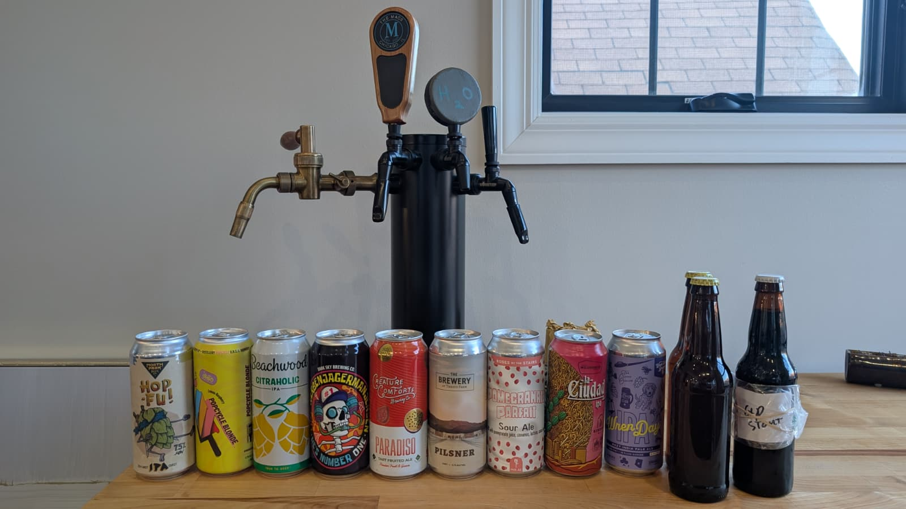
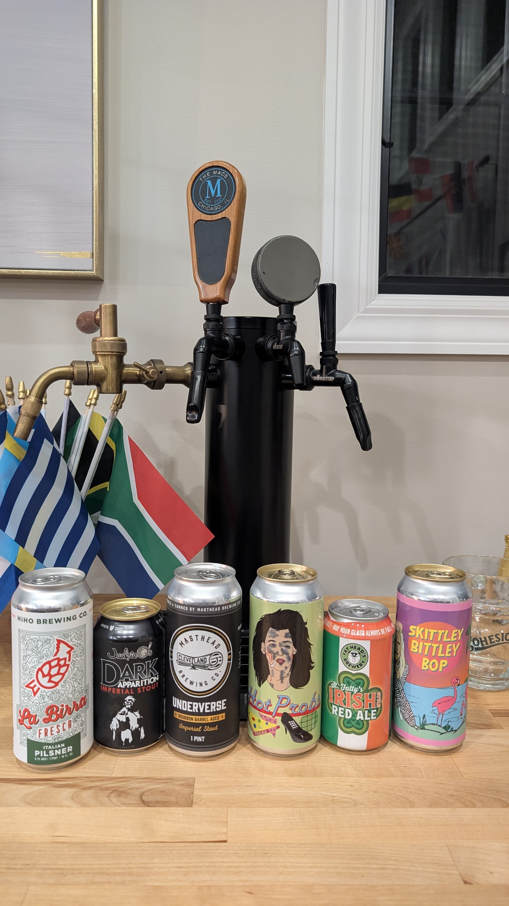
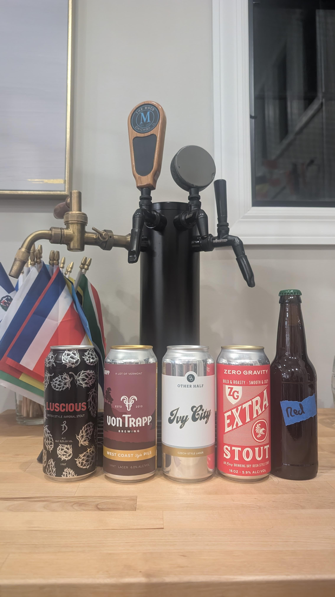
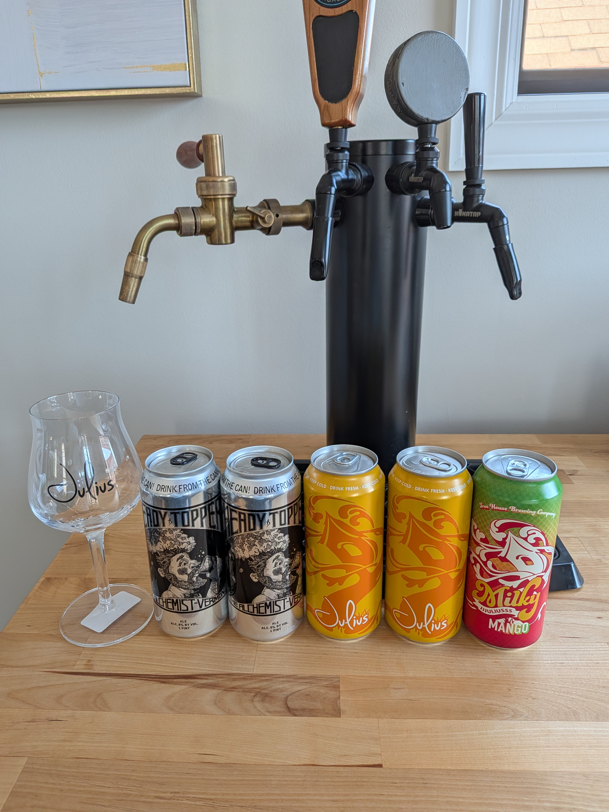
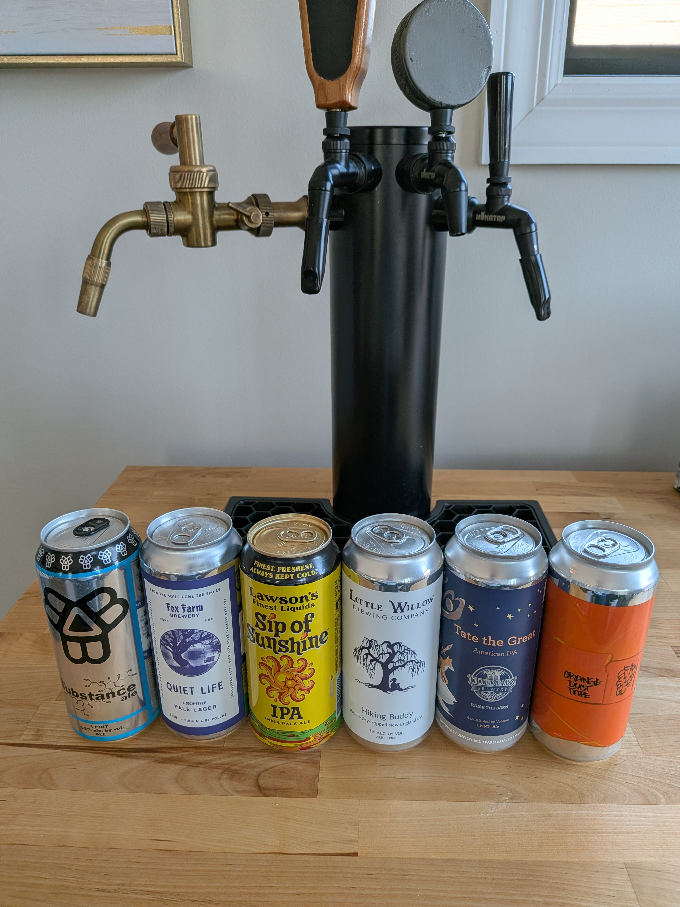
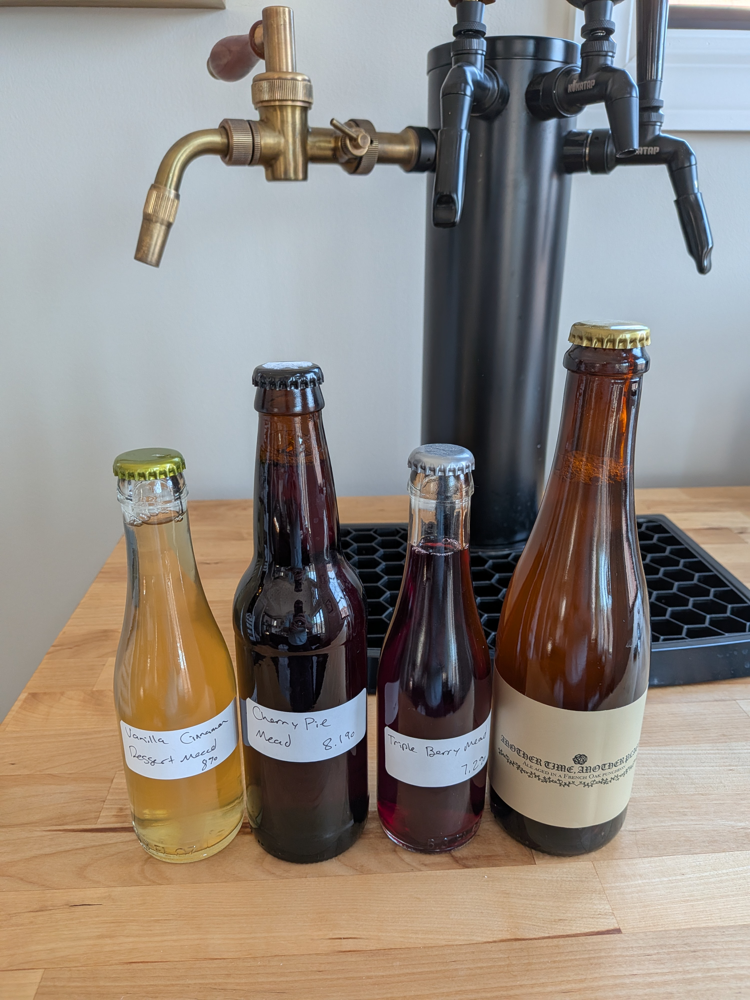
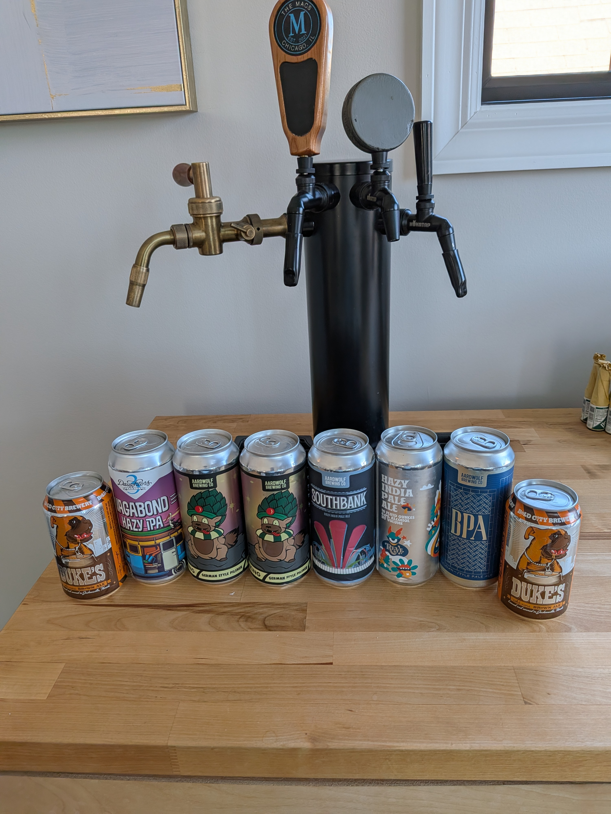
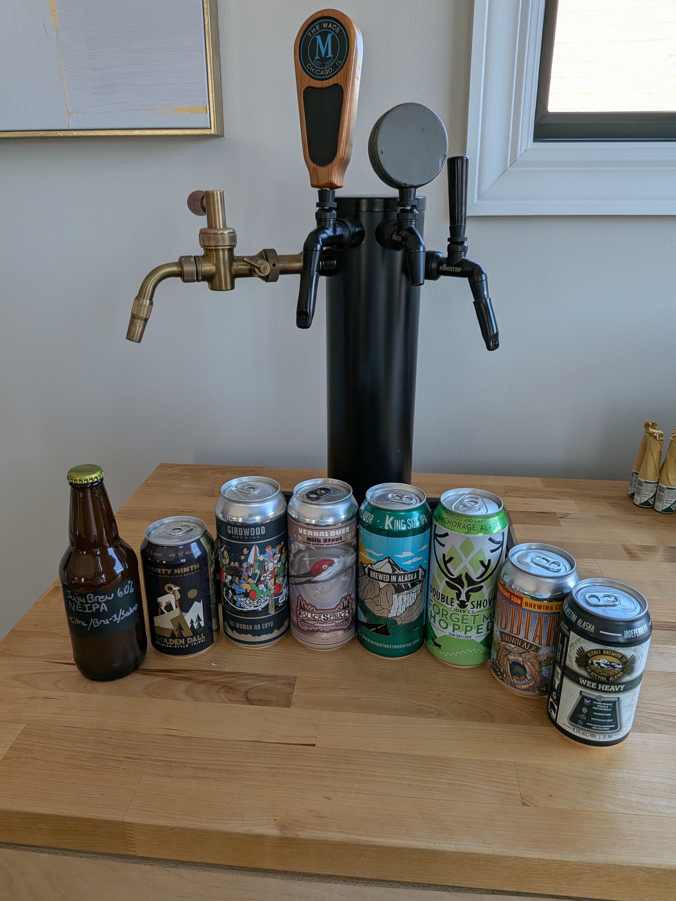